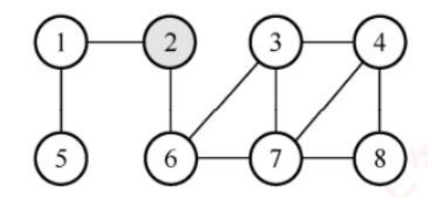
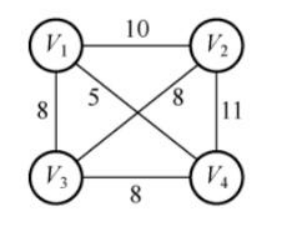
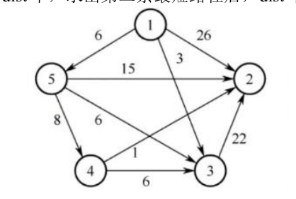
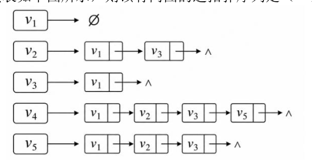

第 61 题
无权无向图的邻接矩阵如图所示，采用BFS 求顶点2 出发到其他顶点的最短路径，那么路径长度为2(起点到终点途径2 条边)的有（ ）个顶点。

- A．1
- B．2
- C．3
- D．4
答案与解析
答案：C
BFS 适合求无权图或者等权图的最短路径，其核心思想是看结点在BFS 遍历的第几层最短路径长度就是多少。第一层有结点1,6，第二层有结点3,5,7。所以路径长度为2 的有3,5,7 共3个顶点。
第 62 题
对下图所示的带权无向图求最小生成树，Prim算法中，将未选取的顶点到已构建的树的最短边长度存在dist 中，即dist 三个元素表示1,2,4 分别到已选取树的最小最短边，如果顶点已加入树，则权值后续保持不变。经过一轮选取并更新后，下列说法正确的是（）。

- A． dist 可能是{8,10,8}
- B． dist 一定是{8,8,5}
- C． dist 一定是{5,8,8}
- D．dist 可能是{8,8,8}
答案与解析
答案：D
第一轮前，dist 数组为{8,8,8}，三个顶点都可以选取：①当第一轮选取V1，dist变为{8,8,5}；②当第一轮选取V2，dist 变为{8,8,8}；③当第一轮选取V4，dist 变为{5,8,8}；所以只有D是正确的。
第 63 题
使用Dijkstra 算法求下图中从顶点1 到其余各顶点的最短路径，将当前找到的从顶点1 到顶点2,3,4,5 的最短路径长度保存在数组dist 中，求出第二条最短路径后，dist 中的内容更新为（ ）。

- A．26,3,14,6
- B．25,3,14,6
- C．21,3,14,6
- D．15,3,14,6
答案与解析
答案：C
Dijkstr 算法中，dist数组的更新原理是：每次选出当前未确定顶点中dist最小的顶点作为新的确定顶点，并用它到各邻接点的距离尝试“松弛”更新这些邻接点的dist值。Dijkstra算法的dist更新公式为： ����[�] = min ( ����[�], ����[�] + �(�, �)) 其中：k：本轮选出的当前dist最小的未确定顶点；j：k的邻接顶点；w(k,j)：边<k,j>的权值；若dist[k] + w(k, j) < dist[j]，则更新dist[j]。过程如下表所示。
第 64 题
一个有向图的反邻接表如下图所示，则该有向图的逆拓扑序列是（ ）。

- A．v4，v5，v2，v3，v1
- B．v1，v3，v2，v5，v4
- C．v4，v5，v3，v2，v1
- D．v5，v4，v2，v3，v1
答案与解析
答案：A
首先题目是反邻接表，即边表都是入边，有向图如下左图所示。逆拓扑排序是从出度为0 的顶点开始，每轮输出一个出度为0 的顶点，然后消除与之相关的入边，反复操作直到所有顶点全部输出。（若不能输出所有顶点即表示该有向图存在环）逆拓扑排序过程如下右图所示。
第 65 题
某工程包含11 个活动，用下图所示的AOE 网描述。若工程从t=0 开始启动，则关于该AOE网，下列说法正确的是（）。
- A．关键路径长度为16
- B．若因为某些原因，活动�6在t=9 时才开始，工程仍可按时完成
- C．活动a5 的时间余量为3
- D．事件v4 的最晚发生时间是7
答案与解析
答案：D
A 错误，关键路径有两条：(v0, v1, v4, v6, v8)或(v0, v1, v4, v7, v8)，长度均为18，即关键路径长度位18。 B 错误，活动a6的最早开始时间和最晚开始时间是5、8，若在t=9 才开始，工程一定会延期。 C 错误，活动a5的最早开始时间和最晚开始时间是4、6，时间余量是6-4=2。 D正确，事件v4的最晚发生时间是关键路径上的事件，最晚发生时间是关键路径长度-11=18- 11=7。